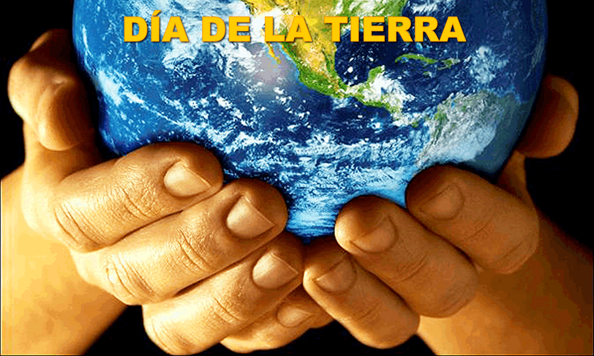
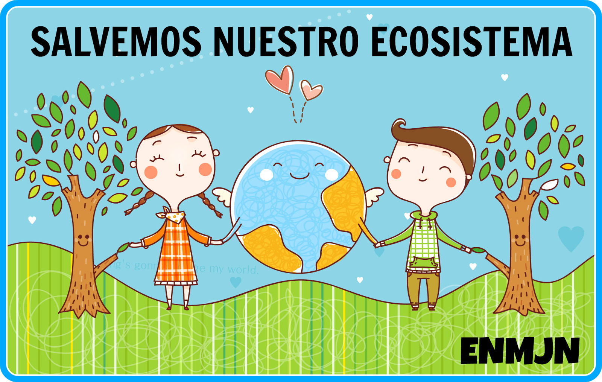
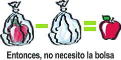
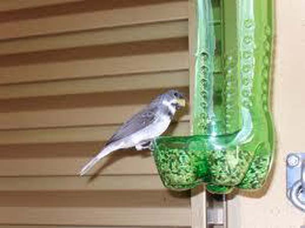
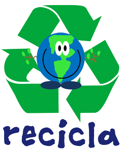
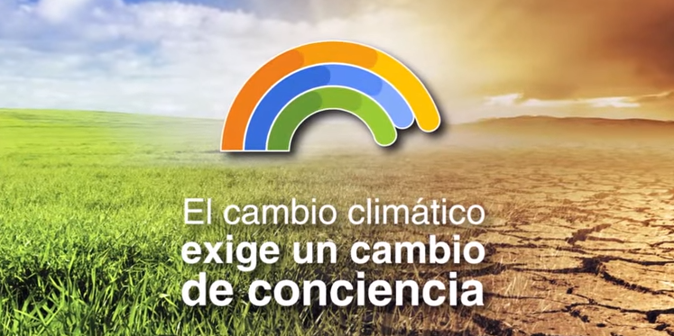
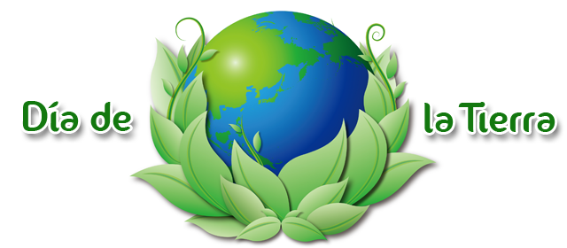

DIA DE LA TIERRA
22 de abril dia de la tierra
dia de la tierra :

dia de la tierra :
Es necesario que el proceso de desarrollo de los países tenga en cuenta todos los elementos que forman el entorno humano. Es decir, necesitamos un modelo de desarrollo en el que el aprovechamiento de los recursos naturales no provoque daños irreparables; una forma de progreso económico y social que favorezca la sana convivencia y respeto de cada persona; un modelo basado en el comportamiento de la naturaleza, es decir, que considere su ciclo de recuperación, y una organización del trabajo humano que garantice un progreso sostenido en el tiempo, en armonía con la conservación del medio ambiente y con el bienestar de todas las personas.
Si reducimos el problema, disminuimos el impacto en el medio ambiente. Los problemas de concienciación, habría que solucionarlos empezando por esta erre. La reducción puede realizarse en 2 niveles: reducción del consumo de bienes o de energía. De hecho, actualmente la producción de energía produce numerosos desechos (desechos nucleares, dióxido de carbono.
Segunda erre más importante, igualmente debido a que también reduce impacto en el medio ambiente, indirectamente. Ésta se basa en reutilizar un objeto para darle una segunda vida útil. Todos los materiales o bienes pueden tener más de una vida útil, bien sea reparándolos para un mismo uso o con imaginación para un uso diferente..
Ésta es una de las erres más populares debido a que el sistema de consumo actual ha preferido usar envases de materiales reciclables (plásticos y bricks, sobre todo), pero no biodegradables. De esta forma se necesita el empleo en mayor forma personal y energía en el proceso..
.
El cambio climático es definido como un cambio estable y durable en la distribución de los patrones de clima en periodos de tiempo que van desde décadas hasta millones de años. Pudiera ser un cambio en las condiciones climáticas promedio o la distribución de eventos en torno a ese promedio (por ejemplo más o menos eventos climáticos extremos). El cambio climático puede estar limitado a una región específica, como puede abarcar toda la superficie terrestre.
Esta festividad se remonta a 1970, cuando 2.000 universidades, 10.000 escuelas y centenares de comunidades estadounidenses salieron a las calles, como parte de una manifestación multitudinaria para exigir la creación de una agencia para la preservación del medio ambiente. Ante la presión social, se ordenó la creación de Environmental Protection Agency (Agencia de Protección Ambiental) y realizó el decreto de una serie de leyes destinadas a salvaguardar el planeta. Desde esa fecha, fue declarado el Día de la Tierra en esta nación norteamericana, celebración que en 1990 se extendió internacionalmente. Este año el día está dedicado a los árboles, por ello el objetivo para conmemorar la fecha será la siembra de 7,8 millones de especies en los próximos cinco años, refiere el portal Web de la Organización de las Naciones Unidas (ONU) De acuerdo con el organismo internacional, los árboles son uno de los principales instrumentos que ayudan a combatir el calentamiento global, ya que contribuyen a la absorción de gases contaminantes, como el óxido de nitrógeno, amoníaco, dióxido de azufre y ozono, además, del exceso perjudicial de CO2 de la atmósfera.
Si nuestra tierra nos castiga con fenómenos meteorológicos extremos, eso significa que simplemente nos esta devolviendo el mismo maltrato que ella recibe por el hombre.
Afinar y dar mantenimiento a los automóviles
Evitar la quema de basura y llantas, así como el uso de cohetes artificiales
Evitar comprar artículos desechables y plásticos que no son biodegradables.
Reciclar la basura
No arrojar basura en la calle, bosques y parques, envolverla o taparla bien en la casa
Usar racionalmente los plaguicidas
Evitar el consumo de tabaco
Cuidar los bosques, no provocar incendios ni destruir las zonas verdes de la ciudad
Posponer las tareas de jardinería que requieran el uso de herramientas a gasolina en días de alto nivel de de ozono.
Consume alimentos orgánicos o al menos aquellos no hayan sido sometidos a un uso tan intensivo de agroquímicos. (puedes cultivarlos en tú azotea con composta hecha por ti mismo)
Restringir la limpieza en seco.
Evita el uso de pinturas, aceites y solventes en días de alta concentración de ozono.
Reduce el consumo de electricidad, lo cual contribuirá a disminuir las emanaciones de contaminantes y partículas.
Prende el carbón de leña con un encendedor eléctrico en vez de hacerlo con combustible líquido.
Aplica el poder de las 3 Erres: Reduce-Reutiliza-Recicla. Un menor consumo redundará en menor contaminación atmosférica de todo tipo..
 3
3